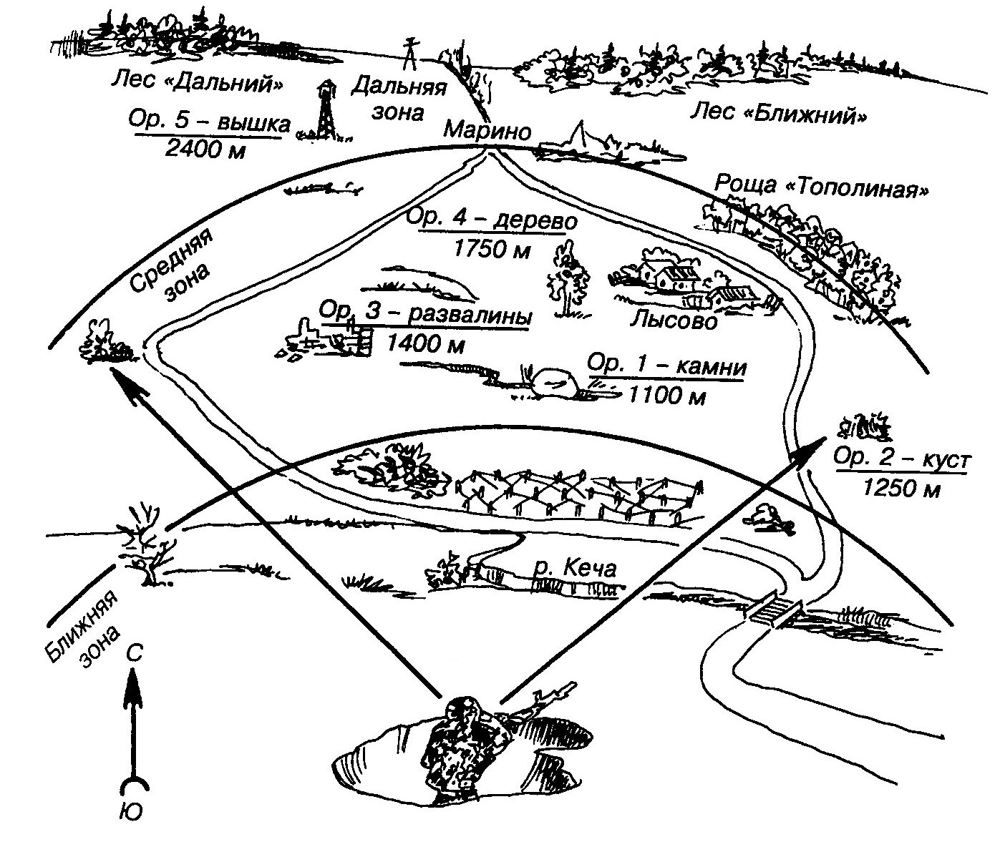

Тема 2. Наблюдательный пост. Изучение и разведка местности
Занятие 1. Наблюдательный пост. Изучение и разведка местности
Организация непосредственного охранения наблюдательного поста.
Определение характера действий противника по различным признакам.
Изучение местности в назначенном секторе по зонам для наблюдения.
Определение расстояния до ориентиров и характерных местных предметов. Составление схемы местности.
Разведка местности и противника с использованием средств освещения местности и подслушивание.
Кардинальные изменения в мире, происшедшие в 90-х годах, привели к пересмотру ведущими западными странами и блоком НАТО в целом военно-стратегических концепций, планов строительства Вооруженных Сил и их технического оснащения. В связи с этим военно-политическое руководство Североатлантического союза взяло курс на сокращение численности Вооруженных Сил.
Одновременно с сокращением решается вопрос повышения их боеспособности за счет повышения качества оружия, совершенствования тактики действий подразделений, частей, соединений и объединений. На основе перевооружения и реорганизации Сухопутных войск, стран-участниц блока НАТО, пересматриваются и способы боевых действий соединений, частей и подразделений.
Именно поэтому в приказах и директивах Министра обороны и главнокомандующего Сухопутными войсками Вооруженных Сил Российской Федерации подчеркивается необходимость глубокого изучения всеми военнослужащими организационно-штатной структуры, вооружения, боевой техники и тактики боевых действий частей и подразделений армий основных стран НАТО (США, Германии, Франции, Великобритании, Турции), а также армий основных стран Азиатско-Тихоокеанского региона (Республики Корея, Корейской Народно-Демократической Республики, Японии, Китая).
Организация, вооружение и тактика действий пехотных (мотопехотных, разведывательных) отделений, взводов, рот армий основных иностранных государств.
В современных вооруженных конфликтах важная роль отводится Сухопутным войскам. В странах НАТО Сухопутные войска являются самым многочисленным видом Вооруженных сил и составляют более 50% от их общей численности.
Сухопутные войска являются одним из видов Вооруженных сил НАТО и предназначены для ведения боевых действий совместно с ВВС и ВМФ, а также с войсками союзников альянса при возникновении вооруженных конфликтов любой интенсивности в разных районах мира.
В настоящее время наиболее подготовленными и оснащенными современным оружием в странах НАТО являются войска армий США, Германии и Турции.
Все существующие в Сухопутных войсках США дивизии принципиально имеют идентичную организационно-штатную структуру.
Каждая включает два основных элемента:
- дивизионная основа;
- боевые батальоны различных типов (мпб, тб, пб, пдб и др.).
- cоотношение и тип боевых батальонов определяют тип дивизии.
Кроме того, по своему предназначению и боевому использованию дивизии США делятся на «тяжелые» (оснащенные тяжелой гусеничной бронетехникой) и «легкие» (не имеющие на вооружении тяжелой бронетехники).
«Тяжелые дивизии» (мд, бртд) в основном используются на Европейском театре военных действий (ТВД), в условиях ведения боевых действий высокой и средней интенсивности, при хорошо развитой инфраструктуре, на местности, позволяющей создавать глубоко эшелонированные механизированные (бронетанковые) группировки.
«Легкие дивизии» (лпд, пд, мтд, вдд, вшд). Учитывая их высокую мобильность, используются для быстрой переброски и ведения боевых действий, преимущественно низкой деятельности, главным образом на слабо оборудованных театрах военных действий и для действий в особых условиях (лес, горы, крупные населенные пункты и др.).
Механизированные (мотопехотные), бронетанковые (танковые) дивизии являются основными общевойсковыми тактическими соединениями Сухопутных войск, ведут боевые действия, как в составе армейского корпуса, так и самостоятельно.
Выполняют задачи во всех видах боя, как с применением, так и без применения ядерного оружия.
Мотопехотные (танковые) батальоны являются основными общевойсковыми тактическими подразделениями механизированных (танковых) дивизий (бригад) Сухопутных войск армии США.
Командир бригады с учетом наличных сил и средств, выделенных ему командиром дивизии, на период выполнения боевых задач на базе мотопехотных и танковых батальонов создает обычно батальонные тактические группы, которые в зависимости от состава могут быть трех видов:
- мотопехотные;
- анковые;
- сбалансированные.
Оптимальное сочетание разнородных сил и средств под единым управлением в составе батальонных тактических групп, по взглядам американского командования, позволяет повысить эффективность использования новых систем оружия и военной техники, а, следовательно, наиболее полно реализовать основные принципы концепции «Воздушно-наземная операция (сражение)».
Смешанный батальон «тяжелой» мотопехотной бригады численностью около 749 человек имеет следующий состав:
- штаб и штабную роту батальона;
- 2 мотопехотные роты;
- 2 танковые роты;
- транспортное отделение.
На вооружении смешанного батальона находятся:
- 28 ед. танков М1 «Абрамс»;
- 60 ед. БМП М2, М3, М7 «Брэдли» и БТР М113;
- 6 ед. 120-мм самоходных миномета;
- 20 ед. ПУ ПТРК «Джавелин»;
- около 40 пулеметов M240G.
По мнению военных специалистов, данная организационно-штатная структура и вооружение смешанного батальона позволят ему выполнять поставленные задачи в любых условиях обстановки.
Наблюдение - один из основных способов ведения разведки. Оно ведется непрерывно, днем и ночью, в любых условиях обстановки. Ночью в условиях ограниченной видимости наблюдение дополняется подслушиванием.
Место НП должно обеспечивать:
хороший обзор местности и НВФ (противника) на возможно большую глубину;
скрытые подступы к нему;
удобство для действий наблюдателей;
размещение и развертывание наблюдательных приборов, средств связи и другого оборудования;
укрытие поста от наблюдения и огня НВФ (противника);
наблюдение за действиями своих подразделений и возможность скрытного выдвижения в их расположение.
Внешне место наблюдательного поста ничем не должно отличаться от окружающей местности. При расположении на местности с большим количеством местных предметов место наблюдательного поста может оборудоваться в виде характерного местного предмета (дерева, кочки, пня, крупного камня, и т.п.).
Место для наблюдения занимается скрытно. Наблюдатели ведут разведку, ничем себя не обнаруживая на протяжении всего времени наблюдения.
В состав наблюдательного поста назначаются 2-3 наблюдателя из числа подготовленных для этого военнослужащих, один из которых назначается старшим наблюдательного поста.
Старший наблюдательного поста руководит действиями наблюдателей.
Он обязан:
ставить задачи наблюдателям;
определять расстояния до ориентиров и характерных местных предметов;
составлять схему ориентиров и схему местности;
определять порядок и время смены наблюдателей;
организовывать инженерное оборудование (дооборудование) и маскировку наблюдательного поста;
проверять исправность приборов наблюдения и средств связи;
выполнять обязанности наблюдателя;
контролировать работу других наблюдателей;
записывать результаты разведки в журнал наблюдения;
наносить результаты наблюдения на карту (схему) и в установленное время докладывать командиру (начальнику), выставившему пост;
немедленно докладывать о резких изменениях в положении и действиях противника (НВФ), об обнаруженных важных объектах (целях), о радиоактивном, химическом, бактериологическом (биологическом) заражении местности.
Наблюдатель обязан:
знать разведывательные и демаскирующие признаки объектов и целей, под-готовки НВФ (противника) к применению оружия и боевой техники, к ведению раз-личных видов тактических действий;
знать приборы наблюдения и связи, готовить их к работе, содержать в исправности и уметь пользоваться ими;
знать ориентиры, условное наименование местных предметов и уметь быстро находить их на местности;
вести непрерывное наблюдение за НВФ (противником), отыскивать объекты (цели), определять их местонахождение, своевременно докладывать о результатах наблюдения лицам, которым подчинен, и делать записи в журнале наблюдения;
соблюдать на посту строжайшую дисциплину и выполнять все требования маскировки;
знать сигналы управления и оповещения;
Наблюдатель не имеет права прекращать наблюдение без приказа старшего наблюдательного поста или до смены его очередным наблюдателем.
Личный состав НП обеспечивается:
схемой единых ориентиров;
крупномасштабной картой или схемой местности с координатной сеткой;
журналом наблюдения;
компасом;
часами;
электрическим фонарем (или иными средствами подсветки);
средствами связи и подачи сигналов оповещения;
приборами наблюдения;
для работы в ночных условиях – тепловизионными наблюдательными приборами, приборами радиолокационной разведки и ночного видения.
Место для наблюдения оборудуется (дооборудуется) личным составом наблюдательного поста своими силами. Наблюдение при этом не должно прекращаться ни в коем случае (один из наблюдателей ведет наблюдение, остальные производят работы). Для ведения войсковой разведки используются различные оптические и оптико-электронные приборы (бинокли, прицелы, буссоли, пнв, тепловизоры и теплопеленгаторы, лазерные дальномеры) радиолокационные станции, оборудование боевых и разведывательных машин.
Наблюдательный пост несет службу до установленного срока или до смены его другим наблюдательным постом, перейти на новое место пост может только с разрешения или по приказу командира, выставившего его. Перемещение осуществляется обычно всем составом поста одновременно с соблюдением мер маскировки и охранения. Порядок перемещения определяет старший наблюдательного поста. При длительном нахождении наблюдательного поста на местности, зараженной отравляющими, радиоактивными и биологическими (бактериальными) средствами, личный состав действует в средствах индивидуальной защиты, а смена наблюдателей производиться чаще. Если позволяет обстановка, старший поста организует частичную специальную обработку наблюдательного пункта, личного состава и вооружения. Наблюдение за противником и местностью при этом не прекращается. Наблюдатель в подразделении подчиняется командиру подразделения и отвечает за своевременное обнаружение противника в своем секторе (районе). Он должен иметь приборы наблюдения, схему ориентиров, компас и часы, а при необходимости — средства связи и подачи сигналов.
Для определения присутствия противника и нахождения нужных целей на поле боя суще-ствует ряд внешних признаков. 1. Обнаружение противника в населенном пункте. Необычная тишина и почти полное отсутствие движения местных жителей - признаки воз-можной засады противника. Большее против нормального количество огней, костры и дым, топка печей в необычное для данной местности время - все это свидетельствует о присутствии врага. Движение по ули-цам или огородам одиночных солдат (связных, посыльных), отдельных легковых машин, мотоциклистов, наконец, ввод в дома проводной связи дают основание предполагать, что в данном пункте расположился штаб. Дым, выходящий не из труб домов, а поднимающийся над садами, огородами или дворами, выдает присутствие войсковых кухонь. Количество источников дыма соответствует количе-ству кухонь, а они в свою очередь - числу рот и батарей, расположенных в данном населен-ном пункте. 2. Признаки отдыхающих войск. Расположение войск на отдыхе выдают разводимые ими костры (дым походных кухонь гу-ще и выше дыма костров), рубка деревьев, голоса людей. Как правило, войска устраивали привалы в укрытых местах (лощины, овраги, небольшой лес, населенные пункты и т.д.). Если разведчик напал на место бывшего привала войск противника, он должен внимательно его обследовать. По величине площади примятой травы или протоптанного снега, по коли-честву костров, по следам автомашин и танков можно определить род войск части, распола-гавшейся на привале, и ее примерный боевой состав, а по следам обуви, машин - направле-ние движения этой части. На месте привала можно обнаружить окурки, пачки из-под сига-рет, обрывки газет, журналов и личных писем, по которым не трудно определить нацио-нальный состав части, настроения солдат и др. Использованные бинты и упаковки из-под лекарств в местах привалов указывают на то, что прошла колонна раненых. Отсутствие на месте привала брошенных предметов снаряжения, обмундирования или во-оружения показывает, что отдыхавшие войска находились в хорошем состоянии. 3. Признаки движения войск. О прохождении войск прежде всего можно судить по следам, оставшимся на дороге; чем больше разбита дорога, тем больше войск прошло по ней. Следы, оставшиеся на дороге, поз-воляют установить род войск, примерный их состав, направление движения и время про-хождения. Следы военной техники отличаются от следов техники гражданского назначения, так как имеют другую ширину хода колес. Давность проезда или прохождения войск опре-деляется по свежести следов, но при этом необходимо учитывать условия погоды, влияю-щие на сохранность следа. Необходимо отметить, что определение прохождения войск по их следам во многом зависит от полотна дороги и его качества. На полевой дороге танки, автомобили и мотоциклы оставляют легко отличимые следы. Определить направление их движения легче всего на грунте средней плотности. По рассто-янию между малыми привалами можно определить примерную скорость движения колонны противника в час. Чем больше калибр артиллерийского орудия, тем шире обод колеса. Тяжелые орудия обычно установлены на гусеничном ходу. По ширине гусеницы и глубине ее следа, оставшегося на грунте, можно определить тип прошедших танков. Колонна пехоты, прошедшая даже по пыльной дороге, оставляет за собой тропы. Количе-ство их соответствует числу рядов в колонне. При внимательном изучении следов можно установить национальный состав солдат, ибо армии различных государств, как правило, имеют разную обувь. В летнее время тропы, образовавшиеся от движения колонн пехоты вдоль дорог, чаще всего можно обнаружить по обочинам дорог и по канавам; когда сухо, движение войск по грунто-вым дорогам определяется по пыли. При движении пехоты пыль над дорогой стелется ниже и гуще, чем при движении техники При наблюдении на большом расстоянии движение пехоты представляется в виде медленно передвигающейся ровной, низкой линии; артиллерии - в виде прерывистой линии; мотоме-ханизированных войск - в виде быстро перемещающейся прерывистой линии. Зимой часть пехоты передвигается на лыжах. Направление ее движения можно установить по следующим признакам: наклон следа от лыжных палок всегда направлен в сторону дви-жения; обгоняющие лыжники, как правило, обходят колонну с правой стороны, поэтому от-дельные обходные лыжни будут находиться справа по направлению пути движения. Определение силы и состава движущихся войск. На марше войска охраняются головными, боковыми и тыльными отрядами (заставами, дозо-рами и постами воздушного наблюдения, оповещения и связи). По боевому составу и по удалению охранения от главных сил противника можно определить силы и даже состав движущейся колонны. Если имеется возможность наблюдать колонну противника, то длину ее определить легко, а по длине колонны можно определить и численность.
Для удобства наблюдения сектор (полоса) наблюдения делится на зоны: ближнюю, среднюю и дальнюю и обозначается условными линиями по местным предметам (ориентирам). Ближняя зона включает участок местности в пределах видимости мелких предметов, объ-ектов, целей (до 400 м). Средняя зона намечается в пределах видимости выделяющихся местных предметов (обычно от 400 до 800 м). Дальняя зона включает весь участок местности до пределов видимости с помощью оптиче-ских приборов. В большинстве случаев впереди наблюдательного поста будут находиться элементы рельефа местности, населенные пункты, лес и другие местные предметы, которые затрудняют наблюдение за определенными участками и создают зоны невидимости. Поэтому необходи-мо точно выявить эти зоны, а затем определить, с какого места эти участки можно просмат-ривать. В этих условиях командир подразделения должен организовать взаимодействие между соседними постами.
 Изучение местности. Подготовка к наблю-дению начинается с детального изучения местности в указанном секторе. Изучать местность необходимо в определен-ной последовательности. Если солдат будет осматривать местность без всякой системы, беспорядочно переводить взор с одного ме-ста на другое, он может не обнаружить про-тивника. Солдат, прежде всего, обязан тщательно изу-чить местность в указанном ему секторе, за-помнить количество, форму, размеры и вза-имное расположение всех местных предме-тов. Это делается для того, чтобы вовремя обнаружить появление противника или за-метить изменение в его расположении и действиях. Наблюдение начинается с ближней зоны и ведется справа, налево путем последователь-ного осмотра местности и местных предме-тов. По условно обозначенным рубежам от себя в глубину обороны противника. Осмотрев, справа налево ближнею зову, солдат взглядом возвращается по нее обратно, как бы проверяя себя, затем осматривает в таком же порядке среднюю и дальнюю зоны. Открытые участки местности просматриваются быстрее закрытие - изучаются более детально. При обнаружении признаков наличия противника местность и объекты изучаются наиболее подробно, с использованием оптических приборов, при этом обязательно определяется ха-рактер цели (объекта), производится его классификация по принадлежности. Обнаружив и выделив цель на фоне местных предметов, солдат обязан: уточнить ее положе-ние на местности по отношению к ориентирам и местным предметам, а также определить расстояние до нее.